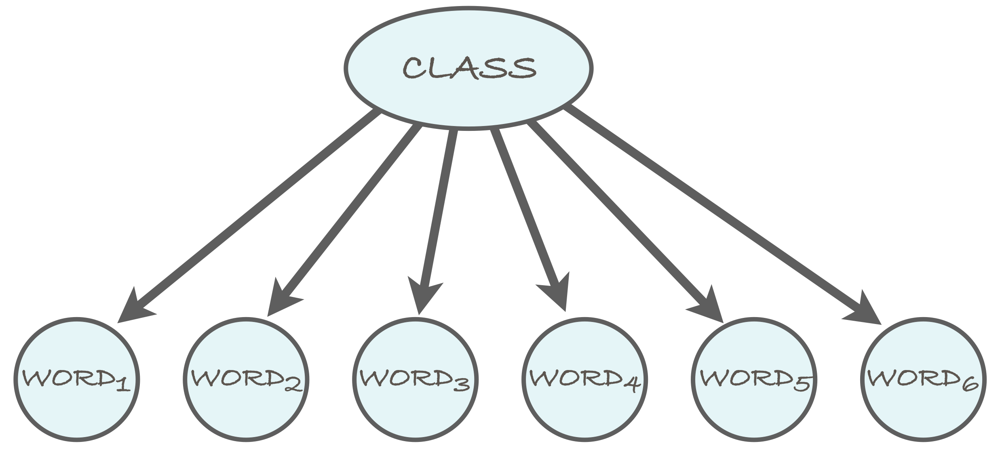

Last week we practiced game algorithms, Minimax and alpha-beta pruning, on the simple game of tic-tac-toe. Tic-tac-toe is a good choice for understanding the basic principles and simulating the algorithms step-by-step. However, it is hardly a very cool AI application.
Now we'll change gears and go for what used to be thought as a some kind of a "grand challenge" for AI, namely chess! (In fact, that's not exactly true since we'll be playing a variant of chess, called Los Alamos chess which is played on a 6 x 6 board with no bishops.)
Implementing the complete game engine with all the rules is somewhat tedious, so we have done it for you. Also, since you've already implemented alpha-beta pruning last week, you don't have to do it again here. Instead, your task is to implement a heuristic evaluation function. The performance of the chess bot is in part determined by the goodness of the evaluation function, so designing a good one is critical for creating a competitive bot.
To make things exciting, we'll have a chess-bot tournament. You will submit your solution (the heuristic evaluation function) on our server and compete against our own contender, Deep Glue and bots by other students. May the best bot win!
- Download the Java template here. NB: There was an error (old version) in the package and it was fixed on Sept 21, 4.20pm. If you have problems uploading to the server, please reload the new package and try again.
-
Implement the method
double eval(Position p)in classYourEvaluator. The method takes as its input a board positionpwhich specifies the positions of all the pieces on the board and which player's turn it is. The return value should be the higher the more likely the white player is to win. -
You can upload the compiled
YourEvaluatorclass (i.e., theclassfile) on the tournament server. (If you use multiple classes, you can also upload a JAR file.) - Once you have uploaded your bot, you can play it against the other bots. You gain points by winning and lose points by losing. The highest ranked bot will be declared the champion at the end of the course. (One week before the exam.)
Probabilistic Inference
Let's now move ahead with the theme Reasoning under Uncertainty, and see how probability can be used for inference in various AI problems.
| Theme | Objectives (after the course, you ...) |
|---|---|
| Reasoning under uncertainty (continued from last week) |
|
Bayes rule and probabilistic inference
Bayes rule has a central role in statistical inference and machine learning. The basis for this is that it can be applied in scenarios where one of the random variables in the model corresponds to an unknown "state" which we are interested to learn. If the model includes other variables that correspond to "observations" that can be made and that are dependent on the unknown state, we can use the Bayes rule as follows

The left side of the equation is called the posterior probability (probability after the observation). The first factor on the right is called the prior probability (probability prior to the observation), the middle factor is called the likelihood (how likely the observation is when the state is given), and the last term on the right has many names, of which the annoying denominator may be the most fitting. (Evidence and marginal likelihood are more common.)
As you may have noticed, when completing last week's exercises, and as you will notice at the latest when completing this week's, calculating the denominator may indeed be annoying.
A nice trick that can sometimes save a lot of effort is to calculate the ratio of posterior probabilities, instead of the probabilities themselves. For example, consider the following ratio
R = P(State=1 | obs) / P(State=2 | obs)
where obs is an abbreviation for observation.
Applying Bayes rule to both the numerator and the denominator
in the ratio, we'll notice that the denominator P(obs)
cancels:
P(State=1) P(obs | State=1) / P(obs) P(State=1) P(obs | State=1)
R = ------------------------------------ = ---------------------------
P(State=2) P(obs | State=2) / P(obs) P(State=2) P(obs | State=2)
In case the two states (1 and 2) are the only possibilities, we
have P(State=2|obs) = 1-P(State=1|obs) (because one of
the events must happen and both cannot occur at the same time).
In this case, after calculating the the above ratio, R,
it can be mapped back into the posterior probability of state 1 by
P(State=1 | obs) = R / (1+R)
You can check that this is true by assigning and using the
fact P(State=2|obs) = 1-P(State=1|obs).
Naive Bayes classification
One of the most useful applications of the Bayes rule is the so called naive Bayes classifier. It is a machine learning technique that can be used to classify objects such as text documents into two or more classes. The classifier is trained by analysing a set of training data, for which the correct classes are given.
The naive Bayes model is a probabilistic model that involves a class variable -- this corresponds to the state variable above -- and a number of feature variables. The assumption in the model is that the feature variables are conditionally independent given the class. (We will not discuss the exact meaning of conditional independence on this course. You can find more about it from the literature. For our purposes, it is enough to be able to exploit conditional independence in building the classifier.)
We will use a spam email filter as a running example for illustrating the idea of the naive Bayes classifier. Thus, the class variable indicates whether a message is spam (or "junk email") or whether it is a legitimate message (also called "ham"). The words in the message correspond to the feature variables, so that the number of feature variables in the model is determined by the length of the message.

The naive Bayes model can be represented as a Bayesian network, which encodes the conditional independence between the feature variables (in this case, the words of the email message) given the class variable as in the above diagram. We'll return to Bayesian networks in the next section below.
Estimating parameters
To define the naive Bayes model, we need to specify the distribution
of each variable. For the class variable, this is the distribution
of spam vs ham messages, which we can for simplicity assume to be
1:1, i.e., P(spam) = P(ham) = 0.5.
For the feature variables, we will define two distributions: one for the spam messages and another one for the ham messages. In each case, we will make the simplifying assumption that each of the words in the message is distributed according to the same distribution. And as we said above, we also assume that the words are independent of each other given the spam/ham class.
The word distributions for the two classes are
best estimated from actual training data, i.e., a
corpus of spam messages and a corpus of legitimate messages. The
simplest way is to count how many times each word, aardvark,
aardwolf, ..., Zyzzogeton, appears in the corpus and dividing
the number by the total number of words in the corpus.
To illustrate the idea, let's assume that we have at our disposal both a spam corpus and a ham corpus. You can easily obtain one by saving a batch of your emails in two files.
Assume that we have calculated the number of occurrences of the following words in the two classes of messages:
word spam ham
----------- ------- -------
million 156 98
dollars 29 119
adclick 51 0
conferences 0 12
----------- ------- -------
total 95791 306438
One problem with estimating the probabilities directly from the counts is that the zero counts lead to zero estimates. This can be quite harmful for the performance of the classifier -- it easily leads to situations where the ratio of the posterior probabilities obtained as 0/0. That sounds dangerously close to the Singularity, so we'd better find a better way. The simplest solution is to use a small lower bound for all probability estimates. The value 0.000001, for instance, does the job.
We can now estimate that the probability that a word in a spam
message is million, for example, is about 156/95791
≈ 0.0016285. In other words, on the average, roughly every
614th word in a spam message is million. Likewise, we
get the estimate 0.0003198 for the probability that a word in a ham
message is million. Both of these probability estimates
are small but more importantly, the former is higher than the
latter. This turns out to be a sign that the word in question hints
towards the message being spam -- which sounds logical. Words for
which the ratio of the probabilities is the other way around, hint
towards the message being ham.
Classifying new data
After the parameters of the model have been estimated, the
classifier is ready for use! When we are given a new message, we
will compute the posterior probability P(spam |
message), where message is a place-holder for
the words in the message, for example, P(spam | 'million',
'conferences') (which would be a really short message).
Let's compute the posterior probability
P(spam | Word1 = 'million', Word2 = 'conferences')
which is abbreviated without a great risk of confusion -- but please
note that unlike million and conferences,
which are hyphenated ('like this') to indicate that they are words that occur
in the message, the term spam indicates
the class of the message, not the word "spam" -- as
P(spam | 'million', 'conferences')
By Bayes rule, we have
P(spam) P('million', 'conferences' | spam)
P(spam | 'million', 'conferences') = ------------------------------------------
P('million', 'conferences')
The numerator on the right side is the likelihood term and its meaning
is the probability that the first two words are million
and conferences given that the message is spam. The
denominator on the right side -- it's the annoying one -- is the
probability that the first two words are as stated when the spam/ham
status of the message is not given.
Let's look at the likelihood term first. The conditional independence assumption, i.e., the naive Bayes assumption, implies that the likelihood can be "factorized" as follows
P('million', 'conferences' | spam) = P('million' | spam) P('conferences' | spam)
This is very useful since these are the kind of probabilities we have estimated from the data. The same factorization rule can be applied no matter how many words there are in the message.
Next up is the annoying denominator. However, we'll use the hint above and avoid calculating the denominator (at least explicitly). To achieve this, we consider the ratio of posteriors:
P(spam | 'million', 'conferences') P(spam) P('million', 'conferences' | spam) / Z
---------------------------------- = ----------------------------------------------
P(ham | 'million', 'conferences') P(ham) P('million', 'conferences' | ham) / Z
where Z, defined as Z = P('million', 'conferences'),
is the annoying denominator which cancels out just as promised in the hint.
The term P('million', 'conferences' | ham) is treated in the exact
same manner as the term corresponding term for spam (see above), and the
numbers required to calculate its value are available since we have
estimated them from the training data.
The following exercises will demonstrate the use of the naive Bayes model.
Consider the word counts given in the table above (million, dollars, etc).
- Estimate the remaining word probabilities for both classes.
-
Use the obtained estimates to calculate the probability
P(Word ≠ 'million'), i.e., the probability that a single word in a message is notmillionwhen the class of the message is unknown. Hint: You should recall the rule for calculating the marginal probability (see, for example, the references given under Section 3.1 Probability Fundamentals of Part 2). -
Calculate
P(spam | 'million'), i.e., the probability that the message is spam given that its first word (or in fact, any particular word) ismillion. -
Calculate
P(spam | 'million', 'dollars', 'adclick', 'conferences'), i.e., the probability that the message is spam when its first four words are as stated.
Use the prior probability P(spam) = 0.5.
Additional hints: In item 3, remember Bayes. In item 4, remember to use a lower bound on the estimates. Also recall the trick about not calculating the annoying denominator.
Implementation details
The above exercise should make it relatively straightforward to see how the filter can be implemented by programming: the key insight is the routine nature of the word-by-word calculations.
A convenient way to group the computations is obtained by slight reshuffling of the terms. Consider still our example two-word message, and the following formula for the ratio of the posterior probabilities
P(spam | 'million', 'conferences')
R = ----------------------------------
P(ham | 'million', 'conferences')
P(spam) P('million' | spam) P('conferences' | spam)
= ---------------------------------------------------
P(ham) P('million' | ham) P('conferences' | ham)
Since the ratio of products is equal to the product of ratios -- i.e., for example, (ABC)/(DEF) = (A/D)(B/E)(C/F) -- we can group the above terms as
P(spam) P('million' | spam) P('conferences' | spam)
R = ------- ------------------- -----------------------
P(ham) P('million' | ham) P('conferences' | ham)
More generally, the formula is
P(spam) N P(word_i | spam)
R = ------- Π ----------------
P(ham) i=1 P(word_i | ham)
where N is the number of words in the message, and word_i is the
i'th word in the message.
Intuitively, the above formula encodes the rule that any word whose
probability is higher in spam messages than in ham messages will
increase the ratio R, and vice versa. For example, in our two-word
message, for i=1, we have word_i =
'million', and the ratio of the word probabilities is
given by
P(word_1 | spam) P('million' | spam) 0.0016285
---------------- = ------------------- ≈ --------- ≈ 5.1
P(word_1 | ham) P('million' | ham) 0.0003198
Thus, each occurrence of the word 'million' in the message
leads to roughly a five-fold increase in the posterior probability ratio.
Putting things together, here's a pseudocode sketch of the classification stage where we assume that the probability estimates have already been calculated from training data.
1: spamicity(words, estimates):
2: R = estimates.prior_spam / estimates.prior_ham
3: for each w in words:
4: R = R * estimates.spam_prob(w) / estimates.ham_prob(w)
5: return R
Here estimates is an object that stores the estimated
probabilities: estimates.prior_spam is the probability that
a message is spam, P(spam), estimates.prior_ham the same
for ham; estimates.spam_prob(w) is the probability
P(Word = w | spam), and estimates.ham_prob(w)
the same for ham.
When dealing with long messages, the posterior probability ratio becomes a product with very many terms. This can easily lead to trouble because products are creatures that easily grow very very large or very very small (close to zero); the mathematical term is 'exponential rate'.
In order to reduce the risk of under- and overflows in the floating
point arithmetics, it is a good idea to carry out the computations
in log-scale. That is, instead of computing the ratio, R, you
should compute its logarithm, log(R). (Store the log-ratio in a variable
like logR.)
The important thing to recall about logarithms is that they convert multiplication into addition: log(AB) = log(A) + log(B); and similarly, division becomes subtraction: log(A/B) = log(A) – log(B). Using these, we can write the log-ratio as
N
logR = log(P(spam)) - log(P(ham)) + Σ [log(P(word_i | spam)) - log(P(word_i | ham))]
i=1
The base of the logarithm (natural, 2, 10, ...) is not
consequential. The important thing is to map the end result back to
the ratio by exponentiating the log-ratio with the same base. So if
you use natural logarithms, for instance, then you should
exponentiate the log-ratio by exp(logR) to get R.
Next you get to implement a naive Bayes spam filter by
programming. The Java template is available on TMC. (In case you
prefer to use another programming language, feel free to. You can
find the ready-made spam and ham word count
files, spamcount.txt and hamcount.txt in
the template.)
-
Download the template and take a look at the word count files in
the template, which originally come from the development team of
the SpamAssassin
spam filter. The common "stop-words" that are uninteresting for
our present purpose, such as the, a, to, ... have been
removed, as have words that occur only once. The files are
sorted so that the most common words in the respective class
come first:
top 10 spam words: top 10 ham words: ------------------ ----------------- 624 free 1776 list 465 email 1263 lists 414 money 1204 use 410 please 1007 exmh 410 mail 987 like 383 list 952 some 360 click 919 wrote 358 content 909 linux 339 business 895 listinfo 306 information 893 rpmThe total number of unique words in the spam messages is 6245, and the total word count is 75268. The ham messages have 16207 unique words and the total word count is 290673. -
Estimate the conditional probabilities
P(Word=s | spam)andP(Word=s | ham)for all wordssthat occur in the files. For example, you should get the estimateP('free' | spam)≈ 0.00829. - Now implement a filter that reads a new message and calculates the probability that it is spam using the naive Bayes model, following the instructions above.
-
Test your classifiers by running it on the two example messages that come with
the TMC template
spamesim.txt(which should classified as spam) andhamesim.txt(which should be classified as ham). You can also try your spam filter on your own email messages.
Hint: In item 3, you may encounter words that you haven't encountered in the training data at all. You can use the small constant lower bound for them.
Here is some additional material on naive Bayes spam filtering that you may like to take a look at:
- Dr Dobbs Journal: Naive Bayesian text classification
- M. Sahami, S. Dumais, D. Heckerman, E. Horvitz (1998). "A Bayesian approach to filtering junk e-mail". AAAI'98 Workshop on Learning for Text Categorization.
Bayesian networks
As we mentioned above, the naive Bayes model is a kind of a Bayesian network, with an associated graph structure where the class variable is the root and the only "parent" of all the feature variables.
Bayesian networks are a model family which belong to the still more general category of (probabilistic) graphical models, which are a modeling "language" for probabilistic models. The power of graphical models is mainly due to i) their ability to compactly represent multivariate domains with complex dependencies, and ii) efficient inference procedures that exploit the structure of the models.
Building blocks of a Bayesian network
A Bayesian network will represent a joint distribution over a number of random variables. Depending on the complexity of the network (which depends on the number of placement of the edges in the graph), the Bayesian network representation may require significantly fewer numerical parameters than the number of elementary events in the domain.
The structure of the network is encoded as a graph where each random variable is represented as a node, and the dependency structure is characterized by a set of directed edges between the nodes. The graph must be a directed acyclic graph (DAG), which means that it is impossible to start from a node follow a path in the direction of the edges to arrive at the same node.
Here's an example DAG:

The random variables in the model are X,Y,Z, and Å. (For the non-Scandi students, the last one is what we call the "Swedish O" in Finland; see Wikipedia:Å. It conveniently comes after X, Y, and Z in our alphabet.) The edges correspond to direct dependency, so that the absence of an edge between any two variables means that the variables are conditionally independent given some (possibly empty) set of other variables. The details of this are slightly too complicated to discuss here, so we'll not go into them.
In addition to the structure encoded as the DAG, a Bayesian network comes with a set of parameters quantifying the conditional distributions of the variables. These are given in the form P(V=v | PaV = paV), where V is a random variable and v is a value, and PaV denotes the parents of node V in the graph. For example, in the above DAG, we have PaZ = {X,Y}, and PaY = ∅